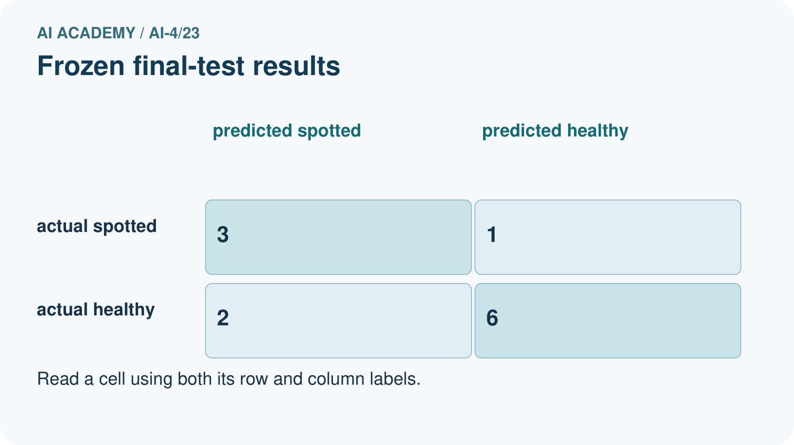
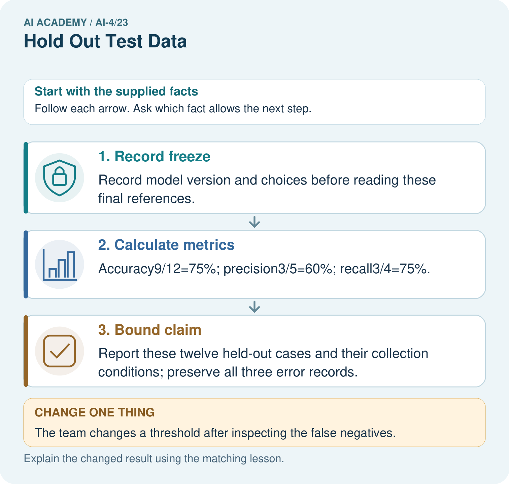

AI Academy · Level 4 · Grade 9 · Week 23 · Teacher guide
Hold Out Test Data
Learn to understand, design, build, test and explain AI systems responsibly.
Project: Responsible Plant Classifier
Teacher guide · 1 of 6
Hold Out Test Data
Teach the learning cycle
Primary target: Freeze the full evaluation procedure before testing
| Session | Sequence and minutes | Resources |
|---|---|---|
| Session 1 · Understand · 45 min | 0–7: recall and prerequisite; 7–15: inspect the concrete case and predict; 15–30: teacher models the worked trace; 30–40: learners explain a step using the text and visual; 40–45: check the core idea. | Sections 1–6; record the brief recall in the workbook. |
| Session 2 · Practise · 45 min | 0–5: retrieve the procedure; 5–15: W2 completion practice; 15–23: explain and check with a partner; 23–30: each learner answers the misconception check; 30–40: targeted reteaching or a harder variation; 40–45: prepare the investigation. | Sections 7–10; use the matching workbook W2 and misconception check. |
| Session 3 · Investigate and transfer · 45 min | 0–5: retrieve the decision rule; 5–20: investigate or trace; 20–30: start the independent case; 30–38: connect the project; 38–43: act on feedback; 43–45: plan the return check. | Sections 9 and 11–14. Give extra time to finish the full task set; use Section 15 when the week includes a coding lab. |
This is a starting allocation of 135 minutes, not a validated duration. Preserve all named topics. Schedule extra time for connected examples, the full investigation, independent cases and project building. Repeated copies of a case share one recorded attempt; they are not new evidence.
Retrieval answer guidance
Train a Regression Model
Without opening the old lesson, explain one key idea from Train a Regression Model. Give an example and a mistake that the idea helps you avoid.
Look for: Fit a line from a declared training candidate set
Reference example, not the only acceptable wording: Teacher explanation: A 5 B 3 C 0; choose m 2 b 1.
Mean, Median, and Baselines
Without opening the old lesson, explain one key idea from Mean, Median, and Baselines. Give an example and a mistake that the idea helps you avoid.
Look for: Fit mean and median constant baselines on training targets
Reference example, not the only acceptable wording: Teacher explanation: Mean 6; median 5.
Precision and Recall
Without opening the old lesson, explain one key idea from Precision and Recall. Give an example and a mistake that the idea helps you avoid.
Look for: Choose the denominator that answers the question
Reference example, not the only acceptable wording: Teacher explanation: Predicted positives TP+FP=7; reference positives TP+FN=4.
Use the student module and workbook section with this exact week title. The worked case, independent question and answers below form one aligned lesson sequence.
What the learner must demonstrate
After seeing test errors, a team adjusts its threshold and reports the improved score on that same test. Rename the set's role and describe an honest final report if no new data exists.
Concept to explain
The final test set must remain untouched until model and threshold choices are finished, or it becomes part of training by decision.
| Term | Meaning |
|---|---|
| holdout | reserved unseen evaluation data |
| contamination | test information influences choices |
| model selection | choose among candidate models |
| final estimate | performance measured once after choices freeze |
Prepare the class
Use the supplied scenario, student illustrations and blank paper. For numeric work, offer counters or a calculator after learners show the setup. Fictional records are supplied; personal data and paid accounts are unnecessary.
Allow 80 minutes: recall 8; explanation 12; worked demonstration 15; guided practice 20; independent assessment 15; project and reflection 10. Extend the lab into a second session when needed.
Preparation for the connected explanation
Teach two 45-minute sessions. This week focuses on final testing and honest claims. Model the worked example first, collect the new W 4 case independently before feedback, and use the fresh retry to check transfer. Award credit for traceable reasoning and bounded claims, including justified uncertainty.
Readiness answer
It influenced choices during development.
Printed student lesson and workbook
Paper, pencils and a calculator for fractions
The fictional examples and a blank evidence table
Saved classroom project records for critique; no personal student dataset required
End goal for the pictorial case
By the end, I can explain hold out test data using a traced example and a stated limitation.
This added worked case illustrates the week’s main idea. Retain all original and connected topics; schedule its practice within the teaching cycle.
Teacher guide · 2 of 6
Explain the mechanism
Explain the mechanism
Trace the information, fitted behavior, and evaluation proof separately.
QUESTION Identify contaminated evaluations and repair the workflow.
MODEL IDEA The final test set must remain untouched until model and threshold choices are finished, or it becomes part of training by decision.
PROOF NEEDED Use an unseen case, visible calculation, error analysis, and a stated limitation.
UNDER THE HOOD Team checks test accuracy after every parameter change. Those repeated choices adapt to the test set, contaminating it.
Draw a fresh data → model → prediction → evaluation trace:
Predict first. Then check each step. A correct answer without visible evidence cannot be audited.
STEP 1 Team checks test accuracy after every parameter change.
STEP 2 Those repeated choices adapt to the test set, contaminating it.
STEP 3 Use training for fitting and validation for model or threshold choices.
STEP 4 After freezing choices, open the holdout once and report the final estimate honestly.
CHECK Verify the denominator, unit, split, class definition, and data version before interpreting a score.
Recalculate, retrace, or restate the evidence independently:
Concrete teaching case
A final-test folder has twenty leaves; its labels are opened weekly to choose models.
Is it still untouched?
Exact explanation to model
No. It functions as validation. Reserve a genuinely unused set for final evaluation or disclose the limitation.
Explain the added worked example
A final test is valuable because it did not guide model choices. Freeze the model, training preprocessing, threshold, metric, missing-prediction policy and test membership. Record the version before opening test labels. A classroom result is evidence about a small chosen set, not approval for deployment.
Use fictional classroom data throughout this investigation. Keep the task, units, reference labels and data split visible as you reason. Earlier weeks supplied the model-building process; this week examines final testing and honest claims.
A frozen classifier is tested on 20 fictional cases: TN 12 FP 2 FN 3 TP 3, blocked positive. Accuracy is 15/20=75 percent, precision 3/5=60 percent and recall 3/6=50 percent. Its previously fitted always-clear baseline gets 14/20=70 percent. The candidate improves accuracy here but misses half the blocked cases.
Before continuing, underline the decision rule and circle the evidence that supports the conclusion. Explain the example to a partner without replacing the counts or conditions with a stronger claim. Keep the distinction between an observed result and a proposed next step.
Key terms
| Term | Meaning |
|---|---|
| Freeze | Record a fixed model and procedure before testing |
| Held out | Kept separate from development decisions |
| Provenance | A record of where data and results came from |
| Claim | A statement whose scope must match its evidence |
Model the reasoning aloud
Use the complete worked example below before asking learners to complete W2. Reveal a small part, invite a prediction, then explain the deciding step. These teacher notes contain solutions; do not reveal the independent case answer during modelling.
Final testing and honest claims at a glance
| Thinking move | Teacher prompt |
|---|---|
| Plan | What is given? What is the question? Which procedure fits these facts? |
| Do | Point to each input and intermediate step in the worked trace. Name the rule that allows the next step. |
| Check | Does the output answer the question? Which assumption or limitation prevents a larger claim? |
Use the diagram and verbal explanation together. Ask learners to match a sentence to a specific visual step; do not assign learners fixed visual or auditory learning styles.
A pictorial worked case: Hold Out Test Data
Open the final hold-out only after recording the frozen model choice.
The facts we will use
Frozen plant classifier evaluates12 new grouped leaves: TP 3, FN 1, FP 2, TN 6. Positive means spotted.
All inputs and outcomes in this worked example are invented classroom data; no real model run is claimed.


Read the picture one step at a time
Why this result follows
Read the picture in order. Report these twelve held-out cases and their collection conditions; preserve all three error records. The arrows show which recorded input or intermediate result each decision uses. Explain the deciding step aloud before checking the changed case; pointing to the final answer alone does not show how it follows.
What this example does not establish
A hold-out can still be unrepresentative, too small or badly labelled; separation alone does not guarantee reliable estimates.
Change one thing in the pictured case
Change: The team changes a threshold after inspecting the false negatives.
Prediction: This set is now development evidence for the revised model.
Reason: Using final outcomes to change the model breaks the untouched hold-out role.
Ask while showing the picture
Cover the result. Ask learners to name the inputs and predict the next step. Uncover one step, connect the icon to the actual procedure, and explain its evidence. Then change the supplied condition and compare. The picture is a representation; it does not document execution of a real AI model.
Teacher guide · 3 of 6
Demonstrate and guide practice
Demonstrate and guide practice
Board sequence
Write the given facts: A final-test folder has twenty leaves; its labels are opened weekly to choose models.
Write the question to explain: Is it still untouched?
Reveal after predictions: No. It functions as validation. Reserve a genuinely unused set for final evaluation or disclose the limitation.
Keep for an independent attempt: You inspect final test failures, change features to fix them and report the new score on that same test set as untouched. What is wrong?
Classroom dialogue
Ask: Which facts are given, and which would we have to assume? Learners mark relevant details before discussing answers.
Say: Predict first. Show the rule, information path or calculation that would produce the result. A correct guess is not yet an explanation.
Reveal reasoning one step at a time. Explain why a tempting alternative fails. Write units and denominators for arithmetic, trace conditions for decisions, and identify supporting sources for claims.
In pairs, one learner solves while the other checks evidence; exchange roles. Remove the worked answer before independent assessment.
Model these guided questions
Guided response: The difference is one correct case on 20; error consequences, limited coverage and missed blocked cases remain. Exit response: Retain the planned denominator and report the failed case and predefined scoring policy; disclose any metric denominator change.
Case-specific teaching sequence
| Stage | Teacher action |
|---|---|
| Session 1 start to 7 minutes | Use the prerequisite question: Why is validation not an untouched final test? Check the explanation before proceeding. |
| 7 to 18 minutes | Read the opening and model the worked evidence. Ask students to identify freeze in context. |
| 18 to 32 minutes | Complete W 1 and W 2 with support: calculate a final report; compare a baseline. Require the evidence, not only the final response. |
| 32 to 45 minutes | Read the visual row by row. Collect the guided explanation and compare reasoning in pairs. Connect each conclusion to the stated evidence. |
| Session 2 start to 8 minutes | Retrieve the distinction between freeze and held out. Invite a counterexample to an overconfident claim. |
| 8 to 20 minutes | Discuss the application and complete W 3: The team changes a threshold after reading test errors. How should it label later results? |
| 20 to 35 minutes | Collect W4 independently before giving hints. Assess these outcomes: Freeze the full evaluation procedure before testing; Report a held-out result with counts and limitations. Record any support used. |
| 35 to 45 minutes | Use W 5 and the exit response to assess limits. Give targeted feedback, then the fresh retry. Save evidence of independent understanding. |
Reduce help deliberately
Completion task: Why does 75 percent versus 70 percent not settle deployment?
Teacher check: Teacher explanation: The difference is one correct case on 20; error consequences, limited coverage and missed blocked cases remain.
Start by identifying the given inputs together. Leave the intermediate steps blank. If needed, model one step, then withdraw that help on the next step. Move to a full trace only when the partial trace is understood. For partners, alternate explainer and checker; collect a response from every learner before discussion.
Individual reasoning check
Use the worked case for Final testing and honest claims. Proposed explanation: “A final answer is enough”. Decide whether this explanation is supported. Point to the step or supplied fact that decides; explain your repair if needed.
Expected correction: Ask for the relevant counts, units, procedure or saved record. For this week: Accuracy 15/20, precision 3/5, recall 3/6. Report TN 12 FP 2 FN 3 TP 3 and blocked positive.
Collect explanations, not only yes/no votes. If a misunderstanding is common, re-model the relevant step for the class. If it affects a few learners, give a short targeted group explanation while others solve a more demanding variation.
Pictorial practice question
What is needed for an honest final claim about the revised version? Point to the relevant step in the picture, then write the changed result and the rule or evidence that supports it.
Reasoned teacher answer
A newly reserved final set with appropriate grouping and fixed scoring rules, evaluated after the revision is frozen. Changed-case check: This set is now development evidence for the revised model. Using final outcomes to change the model breaks the untouched hold-out role.
Changed-case reasoning: This set is now development evidence for the revised model. Using final outcomes to change the model breaks the untouched hold-out role.
Collect each learner’s explanation before discussion. Use the first missing connection between input, deciding step and result to choose support. This question is worked-case practice, not fresh mastery evidence.
Teacher guide · 4 of 6
Run the weekly evidence lab
Run the weekly evidence lab
Keep the test conditions fixed, record every result, and change only one planned factor.
1. Write the hypothesis and expected evidence before running.
2. Split-Integrity Court: classify workflow actions as allowed or contaminating, then redesign the evidence trail.
3. Run one normal, one boundary, one missing, and one shifted case.
4. Calculate the metric from raw counts or row-level errors.
5. Interpret what changed, what did not, and what remains unsafe or unknown.
Make the lab runnable
Use the concrete case as the shared normal case and the independent question as a second case. Each pair creates a boundary or missing-information case and predicts its result before testing. Keep the expected result separate from an observed mistake.
| Record | What to capture |
|---|---|
| Input or evidence | Exact data, instruction or claim |
| Expected result | Answer or safe fallback declared before the run |
| Observed result | Actual result, including errors |
| Explanation | Rule, calculation or evidence explaining the outcome |
| Next test | One justified change and a new prediction |
Diagnose and reteach
MISCONCEPTION TO REPAIR Test data remains unbiased as long as the model never directly fits its labels.
For guessing, return to given facts and request a trace. For vocabulary without application, use one example and one non-example. For arithmetic errors, check the setup before the calculation. Finish with a different uncoached case before recording mastery.
Address these additional misconceptions
A final answer is enough: Ask for the relevant counts, units, procedure or saved record. For this week: Accuracy 15/20, precision 3/5, recall 3/6. Report TN 12 FP 2 FN 3 TP 3 and blocked positive.
A stronger claim makes a stronger project: Retain the planned denominator and report the failed case and predefined scoring policy; disclose any metric denominator change.
The new case can be copied from the example: The independent task changes the evidence. Require a fresh explanation: Accuracy 9/12=75 percent; precision 2/3 about 66.7 percent; recall 2/4=50 percent. These describe these 12 held-out examples only.
Match the support to the first error
| What the response shows | Next teaching action |
|---|---|
| Missing or misread facts | Read the case aloud, mark supplied versus unknown facts, and let the learner restate it. |
| Wrong procedure | Return to the deciding step in the worked case. Contrast it with the proposed incorrect explanation. |
| Arithmetic or implementation error | Trace intermediate values or lines; preserve the first mismatch and retry that step. |
| Correct result without a reason | Ask for a trace and a changed case before marking independent understanding. |
| An unsupported wider claim | Ask which supplied evidence supports the claim and which further observation would be needed. |
Offer an oral explanation, drawing, enlarged visual or fewer examples when that removes a reading/writing barrier. Keep the same reasoning goal. Stretch secure learners by changing a boundary or assumption and asking them to defend the effect, not simply by assigning more of the same questions.
Teacher guide · 5 of 6
Assess and explain the answers
Assess and explain the answers
Worked case answer
No. It functions as validation. Reserve a genuinely unused set for final evaluation or disclose the limitation.
Independent question
You inspect final test failures, change features to fix them and report the new score on that same test set as untouched. What is wrong?
Expected independent answer
The test influenced development and is no longer untouched. Report this use honestly and obtain a separate final evaluation set if a new independent estimate is needed.
What counts as evidence
| Criterion | 0 points | 1 point | 2 points |
|---|---|---|---|
| Result | Incorrect or absent | Partly correct | Correct with necessary conditions |
| Reasoning | No supporting trace | Some steps | Clear mechanism, calculation or source support |
| Limit | Overclaims certainty | Vague limitation | Relevant uncertainty or missing fact |
| Transfer | Copies without adapting | Adapts with prompts | Solves a changed case independently |
Use 6/8 as a classroom checkpoint, with 2 required for both Result and Reasoning. This is a proposed teaching rule, not a validated certification threshold. Do not count a coached answer as independent mastery; correct unsafe or unsupported claims regardless of total.
Feedback
Ask the learner to find the evidence that challenges this claim: “Renaming reused data test restores its independence.” Keep the first attempt and an uncoached retry separate.
Original transfer answer
It became validation/development evidence. Without fresh data, disclose that no untouched final evaluation is available and report the reused-set score as development performance. Do not relabel it unseen because the model did not directly train on those rows.
Explanations for the additional workbook examples
W1 Calculate a final report
Calculate the worked accuracy, precision and recall with denominators.
Teacher explanation: Accuracy 15/20, precision 3/5, recall 3/6. Report TN 12 FP 2 FN 3 TP 3 and blocked positive.
W2 Compare a baseline
Why does 75 percent versus 70 percent not settle deployment?
Teacher explanation: The difference is one correct case on 20; error consequences, limited coverage and missed blocked cases remain.
W3 Handle a revision
The team changes a threshold after reading test errors. How should it label later results?
Teacher explanation: Post-test development on an inspected set, with the first frozen test retained; a fresh independent set is needed for another untouched-test claim.
W4 Apply independently
A new frozen test has TN 7 FP 1 FN 2 TP 2. Calculate accuracy, precision and recall and state a bounded claim.
Teacher explanation: Accuracy 9/12=75 percent; precision 2/3 about 66.7 percent; recall 2/4=50 percent. These describe these 12 held-out examples only.
W5 Report a failure
One planned case returns no prediction. What must the report retain?
Teacher explanation: Retain the planned denominator and report the failed case and predefined scoring policy; disclose any metric denominator change.
Assess independent transfer
Selected case: A new frozen test has TN 7 FP 1 FN 2 TP 2. Calculate accuracy, precision and recall and state a bounded claim.
Selected case answer
Teacher explanation: Accuracy 9/12=75 percent; precision 2/3 about 66.7 percent; recall 2/4=50 percent. These describe these 12 held-out examples only.
| Dimension | Evidence required |
|---|---|
| Explanation | Names the applicable idea or procedure and ties it to the supplied facts. |
| Trace and result | Preserves the given inputs and shows the relevant intermediate steps; distinguishes a prediction from an observed execution. |
| Limits | States the assumptions, missing evidence or conditions under which the result would change. |
Record each dimension as not yet, with support, or independent. Accept a valid alternative procedure with a defensible trace. Do not penalise an honestly recorded model failure if the learner correctly explains its evidence and limits.
Feedback that the learner uses
Name the earliest unsupported step and give one action to repair it. Have the learner make that repair now and explain why. Then assess the relevant skill on a fresh, fully specified case. Confirm it was not previously practised with feedback; solve and check the new case before assigning it. A follow-up design prompt is a starting brief, not automatically an equivalent test.
Teacher guide · 6 of 6
Connect and extend learning
Connect and extend learning
Responsible Plant Classifier
Seal the Plant Classifier final test IDs and labels; record who may open them and at which release gate.
Keep the decision, input, result, explanation and remaining limitation in the project evidence record. Retrieve this record next week rather than restarting the project.
Support and stretch
Use a tiny labelled dataset, explicit units and a named positive class. Stretch: require a baseline, held-out evaluation and subgroup or shifted-condition analysis with denominators.
Exit reflection
Ask for one decision the learner can now justify and one situation requiring more evidence or human review. Confidence ratings are separate from correct independent performance.
Bridge to the next week
Next: Week 24: Train, Validation, Test. Retrieve today’s evidence and identify what carries forward and what is new.
Support and fresh reassessment
Provide a blank evidence table and allow a verbal explanation before writing. Highlight the given conditions without supplying the W 4 conclusion. Use freeze and held out in full sentences. Extension: alter one condition in the worked example and explain which conclusion changes and which remains supported.
For independent W 4, require: Accuracy 9/12=75 percent; precision 2/3 about 66.7 percent; recall 2/4=50 percent. These describe these 12 held-out examples only. Fresh retry TN 8 FP 2 FN 1 TP 1: accuracy 9/12=75 percent, precision 1/3, recall 1/2. Require counts and a scope-limited statement. Mark each criterion as independent, supported or not yet demonstrated. Reassess the reasoning after feedback; do not replace the first attempt silently.
Next week: Overfitting and model capacity. Carry forward the saved evidence and the distinction between development choices and justified claims.
Plan the delayed return
Suggested return points in this level: ai-4/24, ai-4/26, ai-4/29. Use actual classroom dates, adjusting for holidays and gaps. One, three and six teaching weeks are scheduling choices, not a claimed optimal spacing.
At a delayed check, ask for the idea from memory and a changed application. Compare with the earlier independent response and record support used. For a new level, revisit the previous capstone before checking the new prerequisites.
| Record | Teacher evidence |
|---|---|
| Learner code and date | |
| Concept and case used; prior exposure | |
| Explanation / trace / limits | |
| Support and first repair | |
| Changed case and delayed outcome | |
| Next teaching action |
Use the evidence to choose reteaching or the next step. A completed page, confidence rating or attractive project does not by itself demonstrate understanding.
Project evidence from this case
For your Responsible Plant Classifier, save the input, procedure, observed result and limitation of this check. Label this worked example as practice; use a different, previously unreviewed case when checking independent understanding.